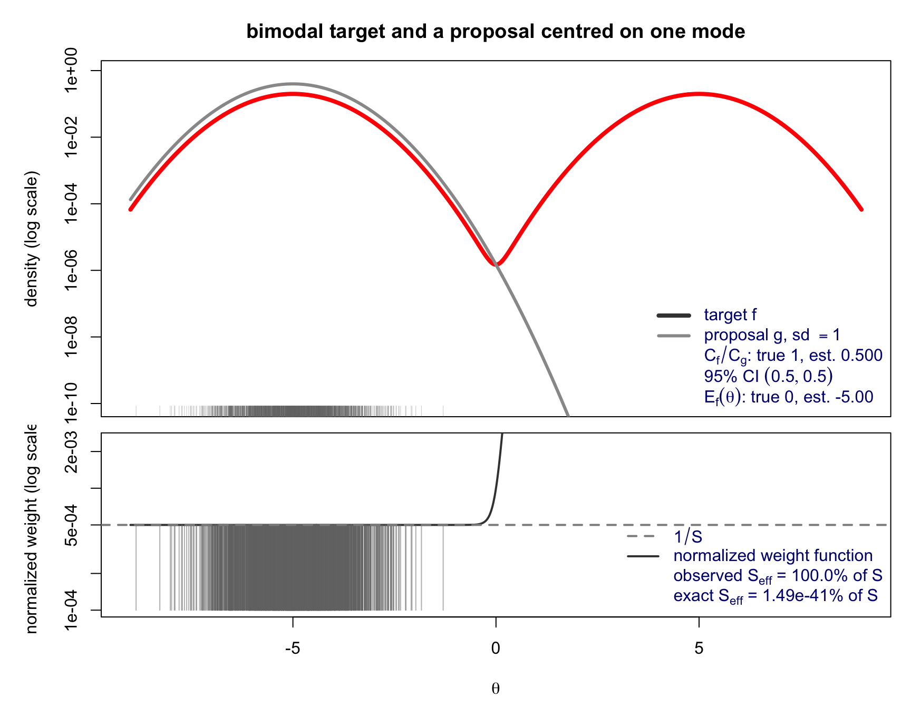

Code
library(ars)
library(latex2exp)library(ars)
library(latex2exp)Rejection sampling turns draws from an envelope \(g \ge f\) into exact draws from \(f\), but every rejected proposal is wasted, and in the tails of a poor envelope almost every proposal is rejected. Importance sampling keeps every proposal instead of discarding most of them: draw from an easier function \(g\) and attach a weight to each draw that corrects for sampling from the wrong distribution. The price is that the resulting sample is no longer an exact iid sample from \(f\) — it is a weighted sample — but nothing is ever thrown away, and no envelope condition \(g \ge f\) is required.
Let \(f(\theta)\) denote an unnormalized function of interest. In Bayesian inference, this typically takes the form \(f(\theta) = L(\theta)\pi(\theta)\), representing the product of a likelihood function \(L\) and a prior distribution \(\pi\). The objective is generally to evaluate two types of integrals:
\[A = E_f\big[a(\theta)\big] = \frac{\int a(\theta)\,f(\theta)\,d\theta}{\int f(\theta)\,d\theta}, \qquad\qquad C_f = \int f(\theta)\,d\theta,\]
which correspond to a posterior expectation and a normalizing constant (the marginal likelihood), respectively. Standard Monte Carlo methods require sampling directly from the normalized target density \(f/C_f\), which is computationally intractable in most complex settings.
Suppose we can instead sample from an alternative proposal distribution \(g(\theta)\), which may also be unnormalized, with a corresponding normalizing constant \(C_g = \int g(\theta)\,d\theta\). The absolute continuity requirement dictates that \(g(\theta)\) must possess support wherever \(f(\theta)\) does:
\[\{\theta : g(\theta) > 0\} \ \supseteq\ \{\theta : f(\theta) > 0\}.\]
Unlike rejection sampling, the proposal \(g\) is not required to strictly dominate \(f\) uniformly; there is no prerequisite that \(g \ge f\). This characteristic renders importance sampling feasible in situations where constructing a bounding envelope is mathematically or computationally impractical.
We define the unnormalized importance weight as \(w(\theta) = f(\theta)/g(\theta)\). For any arbitrary function \(a(\theta)\), the expectation under \(f\) can be expressed as:
\[E_f\big[a(\theta)\big] = \int a(\theta)\,\frac{f(\theta)}{C_f}\,d\theta = \frac{C_g}{C_f}\, E_g\big[a(\theta)\,w(\theta)\big].\]
By evaluating the special case where \(a \equiv 1\), we obtain the ratio of normalizing constants \(C_f/C_g = E_g[w(\theta)]\). Combining these relations yields:
\[E_f\big[a(\theta)\big] = \frac{E_g\big[a(\theta)\,w(\theta)\big]}{E_g\big[w(\theta)\big]}.\]
Given a sequence of independent and identically distributed draws \(\theta_1,\ldots,\theta_S \sim g/C_g\), we compute the corresponding weights \(w_s = w(\theta_s)\). This operation leads directly to two primary estimators:
The estimator \(\hat{A}\) operates as a weighted average over \(a(\theta_s)\). Draws located in regions where \(f(\theta) \gg g(\theta)\) disproportionately influence the estimate, whereas draws in regions where \(f(\theta) \ll g(\theta)\) contribute minimally. To quantify the efficiency of this weighted sample relative to an ideal scenario of independent draws, we compute the Effective Sample Size (ESS):
\[S_{\text{eff}} = \frac{1}{\displaystyle\sum_{s=1}^S \tilde{w}_s^2}.\]
If the normalized weights are perfectly uniform (\(\tilde{w}_s = 1/S\)), then \(S_{\text{eff}} = S\), indicating optimal efficiency. Conversely, if a single weight heavily dominates the sample, \(S_{\text{eff}} \approx 1\), implying that the inference relies almost entirely on a single draw.
Theoretical Derivation. The self-normalized estimator can be expressed as the ratio \(\hat{A} = \bar{N}/\bar{D}\), where \(N_s = w_s a(\theta_s)\) and \(D_s = w_s\), utilizing \(w = f/g\). Applying the delta method to this ratio yields a first-order variance approximation:
\[\operatorname{Var}_g(\hat{A}) \approx \frac{1}{S}E_g\!\bigl[w^{2}(a-A)^{2}\bigr] = \frac{1}{S}E_f\!\bigl[w(a-A)^{2}\bigr],\]
which relies on the identity \(E_g[w\,h] = E_f[h]\). Assuming that the weight \(w\) varies minimally across the primary support of \((a-A)^2\), we can approximate this integral by factoring it as \(E_g[w^2]\operatorname{Var}_f(a)/S\) (substituting \(E_f[w] = E_g[w^2]\)). This produces the relationship:
\[\operatorname{Var}_g(\hat{A}) \approx \frac{\operatorname{Var}_f(a)}{S_{\text{eff}}^{\star}}, \qquad S_{\text{eff}}^{\star} := \frac{S}{E_g[w^{2}]},\]
where \(S_{\text{eff}}^{\star}\) denotes the theoretical (or population) ESS. This quantity is an inherent property of the relationship between the distributions \(f\) and \(g\), independent of the target function \(a\) or finite-sample effects. It represents the exact mathematical metric that reveals severe inefficiencies in pathological scenarios (e.g., missed target modes or heavy-tailed discrepancies), even when the empirically observed \(S_{\text{eff}}\) appears deceptively stable.
Empirical Estimation. By substituting the sample moments \(\frac{1}{S}\sum w_s\) for \(E_g[w]\) and \(\frac{1}{S}\sum w_s^2\) for \(E_g[w^2]\), the theoretical metric \(S_{\text{eff}}^{\star}\) transitions into the standard Kish’s formula: \((\sum w_s)^2 / \sum w_s^2 = 1 / \sum \tilde{w}_s^2\). This demonstrates that Kish’s formula functions as a principled plug-in estimator rather than an ad hoc heuristic.
Limitations and Caveats. The Kish approximation is not uniformly precise. For instance, utilizing the parameters \(f = N(0,1)\), \(g = N(0,2^2)\), \(a(\theta) = \theta^2\), and \(S = 4000\), empirical simulation yields \(\operatorname{Var}(\hat{A}) \approx 3.15 \times 10^{-4}\), which aligns closely with exact delta-method calculations. However, the theoretical approximation \(\operatorname{Var}_f(a)/S_{\text{eff}}^{\star}\) yields \(7.56 \times 10^{-4}\) — an overestimation by more than a factor of two, caused by the negative correlation between \(w\) and \((a-A)^2\) in this specific configuration. More critically, the empirical ESS (\(\widehat{S_{\text{eff}}}\)) is derived exclusively from the observed weights. If the proposal distribution fails to adequately explore regions where \(f\) and \(g\) diverge significantly, the estimator may yield a falsely reassuring \(\widehat{S_{\text{eff}}}\), thereby masking severe sampling inadequacies.
### effective sample size from raw (possibly unnormalized) weights
ess <- function(w) sum(w)^2 / sum(w^2)
### numerically stable log(sum(exp(lx)))
log_sum_exp <- function(lx) { m <- max(lx); m + log(sum(exp(lx - m))) }
### effective sample size computed from LOG weights (avoids under/overflow)
log_ess <- function(lw) exp(2 * log_sum_exp(lw) - log_sum_exp(2 * lw))\[ f(\theta) = \tfrac12\varphi(\theta+d) + \tfrac12\varphi(\theta-d), \qquad g_{\sigma}(\theta) = \tfrac{1}{\sigma}\varphi\!\left(\tfrac{\theta+d}{\sigma}\right), \qquad d = 5 . \]
Both are positive on all of \(\mathbb{R}\), so the support requirement holds. But for \(\sigma\) of order one the proposal concentrates around \(-d\) and never produces draws near the second mode at \(+d\). For \(\theta\) near \(-d\) and \(\sigma=1\), \[ w(\theta) = \frac{f(\theta)}{g_{1}(\theta)} = \tfrac12 + \tfrac12\,\frac{\varphi(\theta-d)}{\varphi(\theta+d)} = \tfrac12 + \tfrac12 e^{2d\theta} \;\approx\; \tfrac12 , \] so every observed weight is nearly equal, \(\tilde w_{i}\approx 1/S\) and \(S_{\text{eff}}\approx S\), while \(\widehat{C_{f}/C_{g}}\approx\tfrac12\) against a truth of \(1\) and \(\widehat{E}_{f}(\theta)\approx -d\) against a truth of \(0\). The draws that would expose the error carry \(w\approx\tfrac12 e^{2d\theta}\gg 1\) near \(\theta=+d\) and have probability \(\Phi(-2d)\approx 10^{-23}\) under \(g_{1}\): they never appear.
Both panels of Figure 11.1 are drawn on the same \(\theta\) axis. The lower panel plots the normalized weight function \(\theta\mapsto w(\theta)/\sum_{j}w_{j}\), whose values at the sampled points are exactly the plotted stems, so the sample can be seen sitting on the flat part of a function that rises without bound to the right.
d <- 5; sg <- 1; S <- 2000
set.seed(11)
## log of the mixture density, computed stably
log_f <- function(th, d) {
a <- dnorm(th, -d, log = TRUE); b <- dnorm(th, d, log = TRUE)
m <- pmax(a, b)
m + log(exp(a - m) + exp(b - m)) - log(2)
}
## exact log E_g(w^2) for this pair; infinite when 2 - 1/sigma^2 <= 0,
## i.e. when sigma <= 1/sqrt(2). Since E_g(w) = 1 exactly, the ideal
## effective fraction is 1 / E_g(w^2).
log_Ew2 <- function(d, sg) {
A <- 2 - 1 / sg^2
if (A <= 0) return(Inf)
lterm <- function(a, b) {
m <- (a + b) / 2
B <- 2 * m + d / sg^2
C <- 2 * m^2 - d^2 / sg^2
dnorm(a, b, sqrt(2), log = TRUE) + log(sg) + 0.5 * log(2) +
0.5 * log(2 * pi / A) - 0.5 * (C - B^2 / A)
}
lv <- c(lterm(-d, -d), log(2) + lterm(-d, d), lterm(d, d))
m <- max(lv)
m + log(sum(exp(lv - m))) - log(4)
}
## ---- sample and weight ------------------------------------------------
th <- rnorm(S, -d, sg)
logw <- log_f(th, d) - dnorm(th, -d, sg, log = TRUE)
mx <- max(logw); v <- exp(logw - mx)
Chat <- mean(v) * exp(mx) # estimate of C_f / C_g, truth 1
se <- sd(v) / sqrt(S) * exp(mx)
wn <- v / sum(v) # normalized weights
ess_obs <- 1 / sum(wn^2)
Ehat <- sum(wn * th) # estimate of E_f(theta), truth 0
ess_x <- 100 * exp(-log_Ew2(d, sg)) # exact effective fraction
## ---- shared axis ------------------------------------------------------
xr <- range(c(th, -d - 4, d + 4))
xs <- seq(xr[1], xr[2], length.out = 1000)
fx <- exp(log_f(xs, d)); gx <- dnorm(xs, -d, sg)
lwc <- log_f(xs, d) - dnorm(xs, -d, sg, log = TRUE) - (mx + log(sum(v)))
layout(matrix(1:2, 2), heights = c(3, 2))
## ---- top panel: the two densities ------------------------------------
par(mar = c(0.4, 5, 3, 1))
yl <- c(1e-10, max(fx, gx) * 2)
plot(xs, fx, type = "n", log = "y", ylim = yl, xlim = xr, xaxt = "n",
xlab = "", ylab = "density (log scale)",
main = "bimodal target and a proposal centred on one mode")
lines(xs, fx, lwd = 4, col = "red")
lines(xs, gx, lwd = 3, col = "grey60")
rug(th, col = adjustcolor("grey45", 0.35))
legend("bottomright", bty = "n", cex = 1.0, text.col = "navy",
lwd = c(4, 3, NA, NA, NA), col = c("grey25", "grey60", NA, NA, NA),
legend = TeX(c(
r"(target $f$)",
sprintf(r"(proposal $g$, sd $= %.2f$)", sg),
sprintf(r"($C_f/C_g$: true 1, est. %.3f)", Chat),
sprintf(r"(95%% CI $(%.3f, %.3f)$)", Chat - 1.96 * se, Chat + 1.96 * se),
sprintf(r"($E_f(\theta)$: true 0, est. %.2f)", Ehat))))
## ---- bottom panel: normalized weights --------------------------------
par(mar = c(4.5, 5, 0.4, 1))
wl <- c(min(wn) / 5, max(wn) * 5)
plot(th, wn, type = "n", log = "y", ylim = wl, xlim = xr,
xlab = expression(theta), ylab = "normalized weight (log scale)")
lines(xs, exp(pmin(lwc, 700)), lwd = 2, col = "grey25")
segments(th, wl[1], th, wn, col = adjustcolor("grey45", 0.5))
abline(h = 1 / S, lty = 2, col = "grey55", lwd = 2)
legend("bottomright", bty = "n", cex = 1.0, text.col = "navy",
lty = c(2, 1, NA, NA), lwd = c(2, 2, NA, NA),
col = c("grey55", "grey25", NA, NA),
legend = TeX(c(
r"($1/S$)",
r"(normalized weight function)",
sprintf(r"(observed $S_{eff}$ = %.1f%% of S)", 100 * ess_obs / S),
sprintf(r"(exact $S_{eff}$ = %.3g%% of S)", ess_x))))
The last two legend entries are the whole lesson. The observed effective sample size is a statistic of the weights that actually appeared, and it reports near-perfect efficiency. The exact effective fraction \(1/E_{g}(w^{2})\), available here in closed form because both densities are Gaussian mixtures, is smaller by some forty orders of magnitude. At \(\sigma=1\) the variance is finite, so the central limit theorem does apply and the estimator is consistent; it would simply need \(S\) of order \(10^{43}\) before its sampling distribution resembled a normal one. Finiteness of the variance is itself fragile: the exact second moment diverges once \(2-\sigma^{-2}\le 0\), that is for every \(\sigma\le 1/\sqrt{2}\).
Figure 11.2 varies \(\sigma\) with everything else held fixed. Three regimes appear. Below \(\sigma=1/\sqrt{2}\) the variance is infinite and the exact effective fraction is reported as zero. Between there and roughly \(\sigma=3\) the failure is silent in the sense above: observed \(S_{\text{eff}}\) near \(S\), estimate near \(\tfrac12\). Past \(\sigma\approx4\) the proposal is over-dispersed enough to place draws near \(+d\); the observed \(S_{\text{eff}}\) then drops, which looks like deterioration and is in fact the diagnostic finally working, and the estimate moves onto the truth. The cure for a missed mode is a proposal that is too diffuse rather than too well matched.
#| '!! shinylive warning !!': |
#| shinylive does not work in self-contained HTML documents.
#| Please set `embed-resources: false` in your metadata.
#| label: app-missed-mode
#| standalone: true
#| viewerHeight: 850
library(shiny)
library(latex2exp)
d <- 5
log_f <- function(th, d) {
a <- dnorm(th, -d, log = TRUE); b <- dnorm(th, d, log = TRUE)
m <- pmax(a, b)
m + log(exp(a - m) + exp(b - m)) - log(2)
}
log_Ew2 <- function(d, sg) {
A <- 2 - 1 / sg^2
if (A <= 0) return(Inf)
lterm <- function(a, b) {
m <- (a + b) / 2
B <- 2 * m + d / sg^2
C <- 2 * m^2 - d^2 / sg^2
dnorm(a, b, sqrt(2), log = TRUE) + log(sg) + 0.5 * log(2) +
0.5 * log(2 * pi / A) - 0.5 * (C - B^2 / A)
}
lv <- c(lterm(-d, -d), log(2) + lterm(-d, d), lterm(d, d))
m <- max(lv)
m + log(sum(exp(lv - m))) - log(4)
}
ui <- fluidPage(
titlePanel("A Failure Example of Importance Sampling"),
sidebarLayout(
sidebarPanel(
width = 3,
sliderInput("sg", HTML("proposal sd σ"), min = 0.25, max = 8,
value = 1, step = 0.05),
selectInput("S", "sample size S",
choices = c(500, 2000, 10000), selected = 2000),
numericInput("seed", "seed", value = 11, min = 1, step = 1),
actionButton("new", "New sample"),
tags$hr(style = "margin:8px 0"),
htmlOutput("readout")
),
mainPanel(width = 9, plotOutput("panels", height = "660px"))
)
)
server <- function(input, output) {
sim <- reactive({
S <- as.integer(input$S); sg <- input$sg
set.seed(input$seed + 1000 * input$new)
th <- rnorm(S, -d, sg)
logw <- log_f(th, d) - dnorm(th, -d, sg, log = TRUE)
mx <- max(logw); v <- exp(logw - mx)
wn <- v / sum(v)
list(th = th, wn = wn, S = S, sg = sg,
Chat = mean(v) * exp(mx),
se = sd(v) / sqrt(S) * exp(mx),
ess = 1 / sum(wn^2),
Ehat = sum(wn * th),
lsum = mx + log(sum(v)),
ess_x = 100 * exp(-log_Ew2(d, sg)))
})
output$panels <- renderPlot({
s <- sim(); th <- s$th; sg <- s$sg
xr <- range(c(th, -d - 4, d + 4))
xs <- seq(xr[1], xr[2], length.out = 1000)
fx <- exp(log_f(xs, d)); gx <- dnorm(xs, -d, sg)
lwc <- log_f(xs, d) - dnorm(xs, -d, sg, log = TRUE) - s$lsum
layout(matrix(1:2, 2), heights = c(3, 2))
par(mar = c(0.4, 5, 3, 1))
yl <- c(1e-10, max(fx, gx) * 2)
plot(xs, fx, type = "n", log = "y", ylim = yl, xlim = xr, xaxt = "n",
xlab = "", ylab = "density (log scale)",
main = "bimodal target and a proposal centred on one mode")
lines(xs, fx, lwd = 4, col = "red")
lines(xs, gx, lwd = 3, col = "grey60")
rug(th, col = adjustcolor("grey45", 0.35))
legend("bottomright", bty = "n", cex = 1.05, text.col = "navy",
lwd = c(4, 3, NA, NA, NA),
col = c("grey25", "grey60", NA, NA, NA),
legend = TeX(c(
r"(target $f$)",
sprintf(r"(proposal $g$, sd $= %.2f$)", sg),
sprintf(r"($C_f/C_g$: true 1, est. %.3f)", s$Chat),
sprintf(r"(95%% CI $(%.3f, %.3f)$)", s$Chat - 1.96 * s$se, s$Chat + 1.96 * s$se),
sprintf(r"($E_f(\theta)$: true 0, est. %.2f)", s$Ehat))))
par(mar = c(4.5, 5, 0.4, 1))
wn <- s$wn
wl <- c(min(wn) / 5, max(wn) * 5)
plot(th, wn, type = "n", log = "y", ylim = wl, xlim = xr,
xlab = expression(theta), ylab = "normalized weight (log scale)")
lines(xs, exp(pmin(lwc, 700)), lwd = 2, col = "grey25")
segments(th, wl[1], th, wn, col = adjustcolor("grey45", 0.5))
abline(h = 1 / s$S, lty = 2, col = "grey55", lwd = 2)
legend("bottomright", bty = "n", cex = 1.05, text.col = "navy",
lty = c(2, 1, NA, NA), lwd = c(2, 2, NA, NA),
col = c("grey55", "grey25", NA, NA),
legend = TeX(c(
r"($1/S$)",
r"(normalized weight function)",
sprintf(r"(observed $S_{eff}$ = %.1f%% of S)", 100 * s$ess / s$S),
sprintf(r"(exact $S_{eff}$ = %.3g%% of S)", s$ess_x))))
})
output$readout <- renderUI({
s <- sim()
HTML(sprintf(
"<b>C<sub>f</sub>/C<sub>g</sub></b><br>true 1, est. %.4f<br>
<b>95%% CI</b> (%.4f, %.4f)<br>
<b>E<sub>f</sub>(theta)</b><br>true 0, est. %.3f<br>
<b>observed ESS</b> %.1f%%<br>
<b>exact ESS</b> %.3g%%<br>
<b>Var<sub>f</sub>(w)</b> %s",
s$Chat, s$Chat - 1.96 * s$se, s$Chat + 1.96 * s$se, s$Ehat,
100 * s$ess / s$S, s$ess_x,
if (s$sg <= 1 / sqrt(2)) "infinite" else "finite"))
})
}
shinyApp(ui, server)The target is a standard Student-\(t_{\nu}\) distribution, with the degrees of freedom \(\nu\) a tuning parameter of the target that controls how heavy its tail is: \(\nu=1\) is the standard Cauchy, and \(\nu\to\infty\) recovers the standard normal. The goal is \(P(c_{1}<X<c_{2})\) for an interval \((c_{1},c_{2})\) — possibly one-sided, \(c_{2}=\infty\) — estimated from draws of a truncated-normal proposal generated by adaptive rejection sampling (ARS).
As in the ARS section of the previous chapter, \(\log\varphi\) is concave, and restricting to \((c_{1},c_{2})\) (or one-sided, \((c_{1},\infty)\)) preserves concavity, so the ars package applies directly: rtnorm_ars() below just hands it the log-density and its derivative, plus the truncation bounds.
## ---------------------------------------------------------------------
## rtnorm_ars(): draw from N(mu, sigma^2) truncated to (lo, hi) (hi may
## be Inf) via the ars package. log-phi is concave, so ars() applies
## directly; x0 gives it three starting abscissae inside (lo, hi), with
## the rightmost past mu when hi = Inf so the upper piece has negative
## slope and stays integrable.
## ---------------------------------------------------------------------
rtnorm_ars <- function(n, mu = 0, sigma = 1, lo = 0, hi = Inf) {
logf <- function(x) dnorm(x, mu, sigma, log = TRUE)
fprima <- function(x) -(x - mu) / sigma^2
if (is.finite(hi)) {
x0 <- lo + (hi - lo) * c(0.1, 0.5, 0.9)
} else {
right <- max(mu, lo) + 3 * sigma
x0 <- sort(unique(c(lo + 0.1 * sigma, max(lo + 0.2 * sigma, mu + 1e-6), right)))
}
ars(n, f = logf, fprima = fprima, x = x0,
lb = TRUE, xlb = lo, ub = is.finite(hi), xub = if (is.finite(hi)) hi else 0)
}The ars package is itself available inside the browser — webR fetches it from CRAN’s WebAssembly mirror the first time library(ars) runs — so the interactive app below calls this exact function, not a hand-rolled substitute.
The contrast with the target is the point of the exercise: ARS needs log-concavity, and \(\log f_{t_{\nu}}\) is simply not concave, for any finite \(\nu\) — it is convex out in the tails, and only the limit \(\nu\to\infty\) (the normal) is concave everywhere. So ARS cannot sample the target directly at any finite \(\nu\); the truncated-normal proposal above is a substitute, not a target-side match, which is exactly why the sample needs importance weights at all.
A one-sided tail \((c,\infty)\) is a bad target for this proposal, so consider instead a general interval \((c_{1},c_{2})\), with \(c_{2}=\infty\) allowed as a special case. Let \(g\) be the normalized truncated normal on \((c_{1},c_{2})\) and \(f(x)=f_{t_{\nu}}(x)I(c_{1}<x<c_{2})\). Draw \(X_{1},\dots,X_{S}\sim g\), weight each by \(w(x)=f(x)/g(x)\), and average: \[ \widehat{C} \;=\; \frac{1}{S}\sum_{i=1}^{S} w(X_{i}). \] This is unbiased for \(C_{f}=P(c_{1}<X<c_{2})\) for any \(g\) that is positive wherever \(f\) is — that is the whole mechanism of importance sampling, and it does not care what \(c_{1},c_{2},\mu,\sigma,\nu\) are.
Whether \(\widehat C\) is precise is a different question, governed by \[ \operatorname{Var}_{g}\bigl(w(X)\bigr) \;=\; \int_{c_{1}}^{c_{2}}\frac{f_{t_{\nu}}(x)^{2}}{g(x)}\,dx \;-\; C_{f}^{2} . \] When \(c_{2}\) is finite, \(f\) and \(g\) share the same bounded interval, the ratio \(f/g\) is bounded on it, and the integral is finite — a well-behaved estimator, whatever \(\nu\) is. Send \(c_{2}\to\infty\), though, and the tails stop matching: \(f_{t_{\nu}}(x)^{2}\) decays only polynomially (\(\propto x^{-2(\nu+1)}\)) while \(g\)’s Gaussian tail decays much faster, so the integrand grows without bound and the integral diverges — for every \(\mu,\sigma\) and every finite \(\nu\). The app below lets you flip between the two regimes with a single checkbox, and, as before, \(S_{\text{eff}}\) need not warn you when you have landed in the bad one.
is_t_interval() turns the estimator above into code: draw \(X\) from rtnorm_ars(), form the log-weight \(\log f_{t_\nu}(X) - \log g(X)\), and report \(\widehat C\), its standard error, and \(S_{\text{eff}}\).
## ---------------------------------------------------------------------
## is_t_interval(): importance-sampling estimate of P(c1 < X < c2) for a
## standard t_df target, using X ~ N(mu, sigma^2) truncated to (c1, c2)
## as the proposal.
## ---------------------------------------------------------------------
is_t_interval <- function(S, df, c1, c2, mu, sigma, seed = NULL) {
if (!is.null(seed)) set.seed(seed)
X <- rtnorm_ars(S, mu, sigma, c1, c2)
## log importance weight log f_t(x; df) - log g(x), with g the
## normalized truncated normal on (c1, c2)
lZ <- log(pnorm(c2, mu, sigma) - pnorm(c1, mu, sigma))
logw <- dt(X, df, log = TRUE) - (dnorm(X, mu, sigma, log = TRUE) - lZ)
m <- max(logw)
v <- exp(logw - m) # rescaled weights
Chat <- mean(v) * exp(m) # unbiased estimate of P(c1 < X < c2)
se <- sd(v) / sqrt(S) * exp(m) # nominal standard error
wn <- v / sum(v) # normalized weights
list(X = X, wn = wn, Chat = Chat, se = se, ess = 1 / sum(wn^2),
truth = pt(c2, df) - pt(c1, df))
}Four settings make the point concretely: a finite interval is well-behaved at any \(\nu\), while \(c_{2}=\infty\) reproduces the divergence — badly at \(\nu=1\), but deceptively well at \(\nu=30\), exactly as Table 11.1 shows.
settings <- data.frame(df = c(1, 10, 1, 30), c1 = c(1, 1, 1, 1), c2 = c(3, 3, Inf, Inf))
res <- lapply(seq_len(nrow(settings)), function(i) with(settings[i, ],
is_t_interval(S = 5000, df = df, c1 = c1, c2 = c2, mu = 0, sigma = 1, seed = 1)))
knitr::kable(data.frame(
df = settings$df,
c1 = settings$c1,
c2 = ifelse(is.finite(settings$c2), as.character(settings$c2), "Inf"),
truth = sapply(res, `[[`, "truth"),
estimate = sapply(res, `[[`, "Chat"),
se = sapply(res, `[[`, "se"),
ess_pct = 100 * sapply(res, `[[`, "ess") / 5000
), digits = 4, col.names = c("df", "c1", "c2", "truth", "estimate", "s.e.", "ESS %"))is_t_interval() with S = 5000: a finite c2 is well-behaved at every df, c2 = Inf reproduces the divergent case, badly at df = 1 and only deceptively well at df = 30.
| df | c1 | c2 | truth | estimate | s.e. | ESS % |
|---|---|---|---|---|---|---|
| 1 | 1 | 3 | 0.1476 | 0.1490 | 0.0014 | 68.7656 |
| 10 | 1 | 3 | 0.1638 | 0.1642 | 0.0004 | 96.8918 |
| 1 | 1 | Inf | 0.2500 | 0.1821 | 0.0128 | 3.9146 |
| 30 | 1 | Inf | 0.1627 | 0.1627 | 0.0003 | 98.5371 |
The app below puts \(c_{1}\), \(c_{2}\), \(\mu\), \(\sigma\) and the target’s degrees of freedom \(\nu\) under slider control (a checkbox sends \(c_{2}\) to \(\infty\)), and displays, on a common \(x\)-axis: the two truncated densities on a log scale with a rug of the draws, and the normalized importance weights \(\tilde w_{i}=w_{i}/\sum_{j}w_{j}\) at the sampled points. The legend reports the true \(P(c_{1}<X<c_{2})\), the estimate, and its nominal 95% interval, colored green when the interval covers the truth and red when it does not. Leave \(c_{2}\) finite and the estimator behaves; check the box and watch it misbehave exactly as the variance calculation predicts, while \(S_{\text{eff}}\) in the bottom panel need not warn you either way. This app runs live only in the HTML edition of this book; readers of other formats can follow the link below it.
#| '!! shinylive warning !!': |
#| shinylive does not work in self-contained HTML documents.
#| Please set `embed-resources: false` in your metadata.
#| label: is-t-app
#| standalone: true
#| viewerHeight: 850
library(shiny)
library(ars)
## rtnorm_ars() and is_t_interval(): identical to the versions defined
## earlier in the chapter (a {shinylive-r} chunk cannot see objects
## defined elsewhere in the document, so they are pasted in verbatim).
rtnorm_ars <- function(n, mu = 0, sigma = 1, lo = 0, hi = Inf) {
logf <- function(x) dnorm(x, mu, sigma, log = TRUE)
fprima <- function(x) -(x - mu) / sigma^2
if (is.finite(hi)) {
x0 <- lo + (hi - lo) * c(0.1, 0.5, 0.9)
} else {
right <- max(mu, lo) + 3 * sigma
x0 <- sort(unique(c(lo + 0.1 * sigma, max(lo + 0.2 * sigma, mu + 1e-6), right)))
}
ars(n, f = logf, fprima = fprima, x = x0,
lb = TRUE, xlb = lo, ub = is.finite(hi), xub = if (is.finite(hi)) hi else 0)
}
is_t_interval <- function(S, df, c1, c2, mu, sigma, seed = NULL) {
if (!is.null(seed)) set.seed(seed)
X <- rtnorm_ars(S, mu, sigma, c1, c2)
lZ <- log(pnorm(c2, mu, sigma) - pnorm(c1, mu, sigma))
logw <- dt(X, df, log = TRUE) - (dnorm(X, mu, sigma, log = TRUE) - lZ)
m <- max(logw)
v <- exp(logw - m)
Chat <- mean(v) * exp(m)
se <- sd(v) / sqrt(S) * exp(m)
wn <- v / sum(v)
list(X = X, wn = wn, Chat = Chat, se = se, ess = 1 / sum(wn^2),
truth = pt(c2, df) - pt(c1, df))
}
ui <- fluidPage(
titlePanel("Importance sampling for Estimating a Student-t Probabilities with a truncated-normal proposal"),
sidebarLayout(
sidebarPanel(
width = 3,
sliderInput("df", HTML("target df ν"), min = 1, max = 30, value = 3, step = 1),
sliderInput("c1", HTML("c<sub>1</sub>"), min = -5, max = 10, value = 1, step = 0.25),
sliderInput("c2", HTML("c<sub>2</sub>"), min = -5, max = 15, value = 3, step = 0.25),
checkboxInput("c2inf", HTML("c<sub>2</sub> = ∞ (infinite-variance case)"), FALSE),
sliderInput("mu", HTML("proposal μ"), min = -5, max = 20, value = 0, step = 0.25),
sliderInput("sg", HTML("proposal σ"), min = 0.25, max = 10, value = 1, step = 0.25),
selectInput("S", "sample size S",
choices = c(200, 1000, 5000, 20000), selected = 1000),
actionButton("new", "New sample"),
checkboxInput("logw", "log scale for weights", FALSE)
),
mainPanel(width = 9, plotOutput("panels", height = "680px"))
)
)
server <- function(input, output) {
sim <- reactive({
S <- as.integer(input$S)
c1 <- input$c1
c2 <- if (input$c2inf) Inf else input$c2
validate(need(c2 > c1, "c2 must be greater than c1"))
mu <- input$mu; sg <- input$sg; df <- input$df
r <- is_t_interval(S, df, c1, c2, mu, sg, seed = input$new + 1)
c(r, list(S = S, c1 = c1, c2 = c2, mu = mu, sg = sg, df = df))
})
output$panels <- renderPlot({
s <- sim()
c1 <- s$c1; c2 <- s$c2; X <- s$X
lo <- c1
hi <- if (is.finite(c2)) c2 else max(max(X) + 0.5, c1 + 5)
xs <- seq(lo, hi, length.out = 800)
## both densities normalized on (c1, c2)
ft <- dt(xs, s$df) / s$truth
gt <- dnorm(xs, s$mu, s$sg) / (pnorm(c2, s$mu, s$sg) - pnorm(c1, s$mu, s$sg))
yl <- range(c(ft, gt)[c(ft, gt) > 0])
yl[1] <- max(yl[1], 1e-12)
lwr <- s$Chat - 1.96 * s$se
upr <- s$Chat + 1.96 * s$se
covered <- lwr <= s$truth && s$truth <= upr
ci_col <- if (covered) "darkgreen" else "firebrick"
layout(matrix(1:2, 2), heights = c(3, 2))
## ---- top panel: the two densities ----------------------------
par(mar = c(0.4, 5, 3, 1))
plot(xs, ft, type = "n", log = "y", ylim = yl, xlim = c(lo, hi),
xaxt = "n", xlab = "", ylab = "density (log scale)",
main = "target and proposal, both normalized on (c1, c2)")
if (!is.finite(c2)) {
rect(max(X), yl[1], hi, yl[2] * 10,
col = adjustcolor("grey60", 0.18), border = NA)
text(max(X), yl[2], " no draw ever reached here", adj = c(0, 1.4),
col = "grey35", cex = 0.95)
}
lines(xs, ft, lwd = 4, col = "firebrick")
lines(xs, gt, lwd = 3, col = "steelblue")
rug(X, col = adjustcolor("steelblue", 0.25))
legend("bottomleft", inset = c(0.02, 0.05), bty = "n", cex = 1.05,
lwd = c(4, 3, NA, NA, NA),
col = c("firebrick", "steelblue", NA, NA, NA),
text.col = c("black", "black", "black", "black", ci_col),
legend = c(
sprintf("target: t(df=%g) on (c1, c2)", s$df),
sprintf("proposal: N(%.2f, %.2f^2) on (c1, c2)", s$mu, s$sg),
sprintf("true P = %.5g", s$truth),
sprintf("est. P = %.5g", s$Chat),
sprintf("95%% CI = (%.5g, %.5g)", lwr, upr)))
## ---- bottom panel: normalized weights ------------------------
par(mar = c(4.5, 5, 0.4, 1))
wn <- s$wn
if (input$logw) {
wl <- c(max(min(wn[wn > 0]), 1e-12), max(wn))
plot(X, wn, type = "n", log = "y", ylim = wl, xlim = c(lo, hi),
xlab = "x", ylab = "normalized weight (log scale)")
segments(X, wl[1], X, wn, col = adjustcolor("grey50", 0.6))
} else {
plot(X, wn, type = "n", ylim = c(0, max(wn) * 1.08),
xlim = c(lo, hi), xlab = "x", ylab = "normalized weight")
segments(X, 0, X, wn, col = adjustcolor("grey50", 0.6))
}
abline(h = 1 / s$S, lty = 2, col = "darkgreen", lwd = 2)
legend("topright", inset = c(0.02, 0.05), bty = "n", cex = 1.05,
lty = c(2, NA, NA), lwd = c(2, NA, NA),
col = c("darkgreen", NA, NA),
text.col = "blue",
legend = c("1 / S (perfectly balanced weights)",
sprintf("ESS = %.1f (%.2f%% of S = %d)",
s$ess, 100 * s$ess / s$S, s$S),
sprintf("largest weight = %.1f%% of the total",
100 * max(wn))))
})
}
shinyApp(ui, server)Several settings repay attention.
The quadrature and Laplace-approximation chapters compute the marginal likelihood \(P(y) = \int L(\theta)\pi(\theta)\,d\theta\) of the same conjugate-free Gaussian model — unknown mean \(\mu\) and \(w=\log\sigma^2\), independent normal priors — by a product grid and by a mode-and-Hessian approximation, respectively. Importance sampling offers a third route, and one that comes with a built-in accuracy diagnostic (\(S_{\text{eff}}\)) that neither of the other two methods provides directly.
Take \(g(\mu,w)\) to be the Gaussian approximation to the posterior obtained by a Laplace fit: locate the posterior mode \((\hat\mu,\hat w)\) by optimization, take \(g = N_2\big((\hat\mu,\hat w),\, H^{-1}\big)\) for \(H\) the Hessian of \(-\log[L\pi]\) at the mode, and importance-sample from \(g\) with \(f = L\pi\): \[
\widehat{P(y)} = \frac{1}{S}\sum_{s=1}^S w_s, \qquad
w_s = \frac{L(\theta_s)\pi(\theta_s)}{g(\theta_s)}, \qquad \theta_s \sim g.
\] Because \(g\) is shaped like the posterior near its mode, this is a “good story” proposal by construction — in sharp contrast to sampling directly from the (typically much wider, uninformative) prior, which is exactly the log_marlik_mc function used elsewhere in this book as a naive-Monte-Carlo check: it is importance sampling with \(g = \pi\), and its weights are just the likelihood values \(L(\theta_s)\).
Implementation
log_lik <- function(x, mu, w) sum(dnorm(x, mu, exp(w / 2), log = TRUE))
log_prior <- function(mu, w, mu_0, sigma_mu, w_0, sigma_w) {
dnorm(mu, mu_0, sigma_mu, log = TRUE) + dnorm(w, w_0, sigma_w, log = TRUE)
}
neg_log_post <- function(theta, x, mu_0, sigma_mu, w_0, sigma_w) {
-log_lik(x, theta[1], theta[2]) -
log_prior(theta[1], theta[2], mu_0, sigma_mu, w_0, sigma_w)
}
### log density of N(mu, A^{-1}) at every column of a 2 x S matrix of points at once,
### replacing a per-point apply() call with one vectorized quadratic form
log_dmvnorm_batch <- function(Theta, mu, A) {
Tc <- Theta - mu
quad <- colSums((A %*% Tc) * Tc)
0.5 * (-nrow(Theta) * log(2 * pi) + sum(log(svd(A)$d)) - quad)
}
### log marginal likelihood by importance sampling from a Laplace-shaped Gaussian.
### Besides S_eff, attaches "se": the standard error of the *log* estimate,
### sd(v) / (sqrt(S) * mean(v)) for v = exp(lw - max(lw)) -- the delta-method
### transfer of the raw estimator's SE onto the log scale, exactly as used for
### the log estimate in the t-interval app above.
log_marlik_imps <- function(x, mu_0, sigma_mu, w_0, sigma_w, S) {
fit <- nlm(neg_log_post, c(mean(x), log(stats::var(x))), hessian = TRUE,
x = x, mu_0 = mu_0, sigma_mu = sigma_mu, w_0 = w_0, sigma_w = sigma_w)
mu_hat <- fit$estimate; H <- fit$hessian
L <- t(chol(solve(H))) # Sigma = H^{-1} = L L'
Theta <- L %*% matrix(rnorm(2 * S), 2, S) + mu_hat
log_g <- log_dmvnorm_batch(Theta, mu_hat, H)
log_f <- -apply(Theta, 2, neg_log_post, x = x, mu_0 = mu_0, sigma_mu = sigma_mu,
w_0 = w_0, sigma_w = sigma_w)
lw <- log_f - log_g
m <- max(lw); v <- exp(lw - m)
structure(log_sum_exp(lw) - log(S),
ess = log_ess(lw), se = sd(v) / (sqrt(S) * mean(v)))
}
### log marginal likelihood by naive Monte Carlo from the prior (g = pi): a
### second, independent importance-sampling estimator with an unfavourable g
log_marlik_prior <- function(x, mu_0, sigma_mu, w_0, sigma_w, S) {
mus <- rnorm(S, mu_0, sigma_mu); ws <- rnorm(S, w_0, sigma_w)
lw <- vapply(seq_len(S), function(i) log_lik(x, mus[i], ws[i]), numeric(1))
m <- max(lw); v <- exp(lw - m)
structure(log_sum_exp(lw) - log(S),
ess = log_ess(lw), se = sd(v) / (sqrt(S) * mean(v)))
}
### "truth": log marginal likelihood by a midpoint grid over (mu, w), centred
### and scaled by the Laplace fit. The likelihood term is vectorized over the
### whole mu-grid at once via the sufficient statistic sum((x - mu)^2), so --
### like log_dmvnorm_batch above -- no R-level loop over grid points, or over
### data points beyond the one sum(), is needed.
log_marlik_grid <- function(x, mu_0, sigma_mu, w_0, sigma_w, n_grid = 400, width = 8) {
n <- length(x)
fit <- nlm(neg_log_post, c(mean(x), log(stats::var(x))), hessian = TRUE,
x = x, mu_0 = mu_0, sigma_mu = sigma_mu, w_0 = w_0, sigma_w = sigma_w)
se <- sqrt(diag(solve(fit$hessian)))
mu_grid <- fit$estimate[1] + seq(-width, width, length.out = n_grid) * se[1]
w_grid <- fit$estimate[2] + seq(-width, width, length.out = n_grid) * se[2]
SS <- sum(x^2) - 2 * mu_grid * sum(x) + n * mu_grid^2 # sum((x - mu)^2)
log_lik_grid <- outer(SS, w_grid,
function(ss, w) -0.5 * n * log(2 * pi) - n * w / 2 - 0.5 * exp(-w) * ss)
log_prior_grid <- outer(dnorm(mu_grid, mu_0, sigma_mu, log = TRUE),
dnorm(w_grid, w_0, sigma_w, log = TRUE), "+")
h_mu <- diff(mu_grid[1:2]); h_w <- diff(w_grid[1:2])
log_sum_exp(as.vector(log_lik_grid + log_prior_grid)) + log(h_mu) + log(h_w)
}log_marlik_grid() supplies ground truth by quadrature — a midpoint grid over \((\mu,w)\), centred and scaled by the same Laplace fit used for the importance proposal, wide enough (8 posterior SDs each way, on a \(400\times
400\) grid) that refining it further does not move the answer. Comparing both proposals against it in a single run, with a 95% CI built from the standard error of that run, makes the difference between them concrete rather than just asserted.
Results across sample sizes
Both proposals target the same \(f=L\pi\), and the prior is a legitimate proposal for it: every posterior draw has positive prior density, so the support condition holds. The two differ only in how well their shape matches the target’s, and the following table varies the amount of data to make that difference visible.
set.seed(4)
ns <- c(5, 20, 100, 400)
S <- 2000
## one proposal, one data set: estimate, interval and S_eff as a % of S
summarize_is <- function(fn, x, S) {
est <- fn(x, 0, 5, 0, 5, S)
se <- attr(est, "se")
c(estimate = sprintf("%.2f", as.numeric(est)),
ci = sprintf("(%.2f, %.2f)",
as.numeric(est) - 1.96 * se,
as.numeric(est) + 1.96 * se),
ess = sprintf("%.1f", 100 * attr(est, "ess") / S))
}
merged_tbl <- do.call(rbind, lapply(ns, function(n) {
x <- rnorm(n)
lap <- summarize_is(log_marlik_imps, x, S)
pri <- summarize_is(log_marlik_prior, x, S)
data.frame(n = n,
truth = sprintf("%.2f", log_marlik_grid(x, 0, 5, 0, 5)),
lap_estimate = lap[["estimate"]],
lap_ci = lap[["ci"]],
lap_ess = lap[["ess"]],
pri_estimate = pri[["estimate"]],
pri_ci = pri[["ci"]],
pri_ess = pri[["ess"]],
row.names = NULL)
}))
## repeated names are intentional: the proposal is carried by the banner
names(merged_tbl) <- c("n", "truth",
"estimate", "95% CI", "ESS %",
"estimate", "95% CI", "ESS %")
tinytable::tt(merged_tbl) |>
tinytable::group_tt(j = list("Laplace-shaped proposal" = 3:5,
"prior sampling" = 6:8))| Laplace-shaped proposal | prior sampling | ||||||
|---|---|---|---|---|---|---|---|
| n | truth | estimate | 95% CI | ESS % | estimate | 95% CI | ESS % |
| 5 | -10.09 | -10.16 | (-10.21, -10.11) | 43.3 | -10.00 | (-10.31, -9.69) | 1.9 |
| 20 | -37.29 | -37.31 | (-37.33, -37.29) | 84.9 | -36.86 | (-37.32, -36.40) | 0.9 |
| 100 | -153.02 | -153.01 | (-153.02, -153.01) | 96.3 | -153.94 | (-155.12, -152.76) | 0.1 |
| 400 | -531.18 | -531.18 | (-531.18, -531.18) | 99.2 | -534.74 | (-536.43, -533.05) | 0.1 |
The Laplace-shaped proposal re-centers and re-scales itself around the posterior mode for every data set. Its interval stays tight and centred on the truth at every \(n\), and \(S_{\text{eff}}\) stays close to the nominal \(S\): a second-order approximation to the posterior is evidently a good match to it. Prior sampling degrades monotonically. The posterior concentrates at rate \(n^{-1/2}\) while the prior does not move, so the fraction of prior mass lying where the likelihood is appreciable shrinks with \(n\), the weights become ever more concentrated on a handful of draws, and \(S_{\text{eff}}\) falls to a small fraction of one percent. Its interval may still cover the truth, but it is only as trustworthy as those few draws happen to be from one run to the next.
This is the marginal-likelihood instance of the lesson drawn from the missed-mode example: a fixed, data-independent proposal becomes an increasingly poor match to a target that concentrates as data accumulate, and only a proposal that adapts to the target avoids the resulting collapse in efficiency. Note also the contrast in how the two failures announce themselves. Prior sampling fails noisily — \(S_{\text{eff}}\) reports the collapse directly, which is exactly what the diagnostic is built to catch. The earlier tail examples failed silently, with \(S_{\text{eff}}\) near its nominal value while the estimate was badly wrong, because there the weights were uniform among the draws actually observed and the trouble lay entirely outside the region the proposal ever visited.
A single number like \(S_{\text{eff}}\) summarizes the weight distribution; looking at the weights themselves is more direct. The app below draws \(S\) importance samples from each proposal and plots their normalized weights, sorted from largest to smallest against rank\(/S\), in two separate panels, because the two proposals’ weights live on such different scales that a shared axis would flatten the well-behaved one to a barely visible line. The weight axis defaults to a log scale — a proposal shaped like the target gives a nearly flat curve close to \(1/S\) (every draw contributes about equally), while a poorly matched proposal gives a curve that falls off a cliff, with a handful of draws near rank \(0\) carrying nearly all the weight; a checkbox switches both panels to a linear scale instead, where that same cliff collapses to a single spike against an otherwise invisible floor — a useful reminder that the log scale is doing real work, not just spreading the picture out. Each panel’s legend reports the grid-quadrature truth and that proposal’s estimate and 95% CI, colored green when the interval covers the truth and red when it does not. This app runs live only in the HTML edition of this book; readers of other formats can follow the link below it.
#| '!! shinylive warning !!': |
#| shinylive does not work in self-contained HTML documents.
#| Please set `embed-resources: false` in your metadata.
#| label: marlik-weights-app
#| standalone: true
#| viewerHeight: 820
library(shiny)
log_sum_exp <- function(lx) { m <- max(lx); m + log(sum(exp(lx - m))) }
log_lik <- function(x, mu, w) sum(dnorm(x, mu, exp(w / 2), log = TRUE))
log_prior <- function(mu, w, mu_0, sigma_mu, w_0, sigma_w) {
dnorm(mu, mu_0, sigma_mu, log = TRUE) + dnorm(w, w_0, sigma_w, log = TRUE)
}
neg_log_post <- function(theta, x, mu_0, sigma_mu, w_0, sigma_w) {
-log_lik(x, theta[1], theta[2]) -
log_prior(theta[1], theta[2], mu_0, sigma_mu, w_0, sigma_w)
}
log_dmvnorm_batch <- function(Theta, mu, A) {
Tc <- Theta - mu
quad <- colSums((A %*% Tc) * Tc)
0.5 * (-nrow(Theta) * log(2 * pi) + sum(log(svd(A)$d)) - quad)
}
## same grid-quadrature "truth" as log_marlik_grid() above
marlik_truth <- function(x, mu_0, sigma_mu, w_0, sigma_w, n_grid = 400, width = 8) {
n <- length(x)
fit <- nlm(neg_log_post, c(mean(x), log(stats::var(x))), hessian = TRUE,
x = x, mu_0 = mu_0, sigma_mu = sigma_mu, w_0 = w_0, sigma_w = sigma_w)
se <- sqrt(diag(solve(fit$hessian)))
mu_grid <- fit$estimate[1] + seq(-width, width, length.out = n_grid) * se[1]
w_grid <- fit$estimate[2] + seq(-width, width, length.out = n_grid) * se[2]
SS <- sum(x^2) - 2 * mu_grid * sum(x) + n * mu_grid^2
log_lik_grid <- outer(SS, w_grid,
function(ss, w) -0.5 * n * log(2 * pi) - n * w / 2 - 0.5 * exp(-w) * ss)
log_prior_grid <- outer(dnorm(mu_grid, mu_0, sigma_mu, log = TRUE),
dnorm(w_grid, w_0, sigma_w, log = TRUE), "+")
h_mu <- diff(mu_grid[1:2]); h_w <- diff(w_grid[1:2])
log_sum_exp(as.vector(log_lik_grid + log_prior_grid)) + log(h_mu) + log(h_w)
}
## Laplace-shaped proposal: draw, weight, and return the log estimate, its
## standard error (delta method), and the sorted normalized weights
sim_laplace <- function(x, mu_0, sigma_mu, w_0, sigma_w, S) {
fit <- nlm(neg_log_post, c(mean(x), log(stats::var(x))), hessian = TRUE,
x = x, mu_0 = mu_0, sigma_mu = sigma_mu, w_0 = w_0, sigma_w = sigma_w)
mu_hat <- fit$estimate; H <- fit$hessian
L <- t(chol(solve(H)))
Theta <- L %*% matrix(rnorm(2 * S), 2, S) + mu_hat
log_g <- log_dmvnorm_batch(Theta, mu_hat, H)
log_f <- -apply(Theta, 2, neg_log_post, x = x, mu_0 = mu_0, sigma_mu = sigma_mu,
w_0 = w_0, sigma_w = sigma_w)
lw <- log_f - log_g
m <- max(lw); v <- exp(lw - m); wn <- v / sum(v)
list(est = log_sum_exp(lw) - log(S), se = sd(v) / (sqrt(S) * mean(v)),
ess = 1 / sum(wn^2), wn = sort(wn, decreasing = TRUE))
}
## prior proposal (g = pi): same bookkeeping, unfavourable g
sim_prior <- function(x, mu_0, sigma_mu, w_0, sigma_w, S) {
mus <- rnorm(S, mu_0, sigma_mu); ws <- rnorm(S, w_0, sigma_w)
lw <- vapply(seq_len(S), function(i) log_lik(x, mus[i], ws[i]), numeric(1))
m <- max(lw); v <- exp(lw - m); wn <- v / sum(v)
list(est = log_sum_exp(lw) - log(S), se = sd(v) / (sqrt(S) * mean(v)),
ess = 1 / sum(wn^2), wn = sort(wn, decreasing = TRUE))
}
ui <- fluidPage(
titlePanel("Sorted importance weights: Laplace-shaped proposal vs. prior"),
sidebarLayout(
sidebarPanel(
width = 3,
sliderInput("n", "data size n", min = 5, max = 200, value = 20, step = 5),
sliderInput("sig_mu", HTML("prior sd on μ"), min = 1, max = 10, value = 5, step = 0.5),
sliderInput("sig_w", HTML("prior sd on w"), min = 1, max = 10, value = 5, step = 0.5),
selectInput("S", "importance sample size S",
choices = c(500, 2000, 5000, 20000), selected = 2000),
actionButton("new", "New sample"),
checkboxInput("logw", "log scale for weights", TRUE)
),
mainPanel(width = 9, plotOutput("panel", height = "720px"))
)
)
server <- function(input, output) {
sim <- reactive({
n <- input$n; S <- as.integer(input$S)
sig_mu <- input$sig_mu; sig_w <- input$sig_w
set.seed(input$new + 1)
x <- rnorm(n)
list(S = S,
truth = marlik_truth(x, 0, sig_mu, 0, sig_w),
lap = sim_laplace(x, 0, sig_mu, 0, sig_w, S),
pri = sim_prior(x, 0, sig_mu, 0, sig_w, S))
})
output$panel <- renderPlot({
s <- sim(); S <- s$S
rank_frac <- seq_len(S) / S
uselog <- input$logw
lwr_lap <- s$lap$est - 1.96 * s$lap$se; upr_lap <- s$lap$est + 1.96 * s$lap$se
lwr_pri <- s$pri$est - 1.96 * s$pri$se; upr_pri <- s$pri$est + 1.96 * s$pri$se
cov_lap <- if (lwr_lap <= s$truth && s$truth <= upr_lap) "darkgreen" else "firebrick"
cov_pri <- if (lwr_pri <= s$truth && s$truth <= upr_pri) "darkgreen" else "firebrick"
draw_panel <- function(wn, col, title, xlab, est, lwr, upr, ess_pct, cov_col) {
if (uselog) {
floor <- max(min(wn[wn > 0]), 1e-300)
wn <- pmax(wn, floor)
ylim <- range(wn)
ylab <- "normalized weight (log scale)"
} else {
ylim <- c(0, max(wn))
ylab <- "normalized weight"
}
plot(rank_frac, wn, type = "n", log = if (uselog) "y" else "",
ylim = ylim, xlab = xlab, ylab = ylab, main = title)
lines(rank_frac, wn, lwd = 3, col = col)
abline(h = 1 / S, lty = 2, col = "darkgreen", lwd = 2)
legend("topright", inset = c(0.02, 0.05), bty = "n", cex = 1.05,
text.col = c("black", cov_col),
legend = c(
sprintf("truth: log P(y) = %.3f", s$truth),
sprintf("est=%.3f CI=(%.3f,%.3f) ESS=%.2f%%", est, lwr, upr, ess_pct)))
}
layout(matrix(1:2, 2))
par(mar = c(2.5, 5, 3, 1))
draw_panel(s$lap$wn, "steelblue", "Laplace-shaped proposal", "",
s$lap$est, lwr_lap, upr_lap, 100 * s$lap$ess / S, cov_lap)
par(mar = c(4.5, 5, 2.5, 1))
draw_panel(s$pri$wn, "firebrick", "prior proposal",
"rank / S (draws sorted by weight, largest first)",
s$pri$est, lwr_pri, upr_pri, 100 * s$pri$ess / S, cov_pri)
})
}
shinyApp(ui, server)Raise \(n\) with the sliders at their defaults and watch the prior’s curve rotate from a gentle slope into a cliff at the very first few ranks, while the Laplace curve barely moves — the same collapse as in Table 11.2, now visible in the shape of the curve rather than only in a single summary number.
Statistical physics supplies a second reading of the same estimator. A system with energy \(U(x)\) at inverse temperature \(\beta\) has partition function and free energy \[ Z(\beta) = \int e^{-\beta U(x)}\,dx, \qquad F(\beta) = -\frac{1}{\beta}\log Z(\beta). \] \(e^{-\beta U(x)}/Z(\beta)\) is the Boltzmann distribution at temperature \(1/\beta\): large \(\beta\) (low temperature) concentrates mass where \(U\) is small, small \(\beta\) (high temperature) spreads it out.
To move between two temperatures, importance-sample from \(g(x)=e^{-\beta_0 U(x)}\) to \(f(x) = e^{-\beta_1 U(x)}\). The weight is \(w(x) = f(x)/g(x)=e^{-(\beta_1-\beta_0)U(x)}\), and the ratio-of-normalizing-constants estimator from the start of the chapter reads \[ \frac{Z(\beta_1)}{Z(\beta_0)} = E_{\beta_0}\!\left[e^{-(\beta_1-\beta_0)U(x)}\right], \] an expectation under the \(\beta_0\)-tempered distribution.
Set \(U(\theta) = -\log L(\theta)\). Then \(\beta=0\) gives \(e^{-\beta U}\propto
1\) — up to normalization the prior, taking \(g=\pi(\theta)\) — and \(\beta=1\) gives \(e^{-U}=L(\theta)\), so \(f=L(\theta)\pi(\theta)\) is the (unnormalized) posterior. The ratio \(Z(1)/Z(0)\) is exactly the marginal likelihood \(C_f/C_g\) of the previous section: \[
P(y) = \frac{C_f}{C_g} = E_\pi\!\big[L(\theta)\big] \approx \frac1S\sum_{s=1}^S L(\theta_s), \qquad \theta_s\sim\pi,
\] and \(-\log P(y)\) is, in this language, the free energy of the posterior at \(\beta=1\). This is not a new estimator — it is log_marlik_prior() from above, rederived from a different starting point. The physics vocabulary just names the failure mode precisely: jumping straight from \(\beta=0\) to \(\beta=1\) asks one importance-sampling step to bridge the entire temperature range in a single move, and the wider the prior is relative to the likelihood, the more that one jump resembles the badly matched proposals seen earlier in this chapter.
The fix follows from the algebra of the ratio itself. Chaining intermediate temperatures \(\beta_0=0<\beta_1<\dots<\beta_K=1\), \[ \frac{Z(1)}{Z(0)} = \prod_{k=1}^K \frac{Z(\beta_k)}{Z(\beta_{k-1})}, \qquad \log Z(1)-\log Z(0) = \sum_{k=1}^K \log\frac{Z(\beta_k)}{Z(\beta_{k-1})}, \] and each factor is its own small importance-sampling problem: sample from the tempered distribution at \(\beta_{k-1}\), weight by \(e^{-(\beta_k-\beta_{k-1})U(\theta)}\). If the temperatures are close enough together, \(g_{\beta_{k-1}}\) and \(f_{\beta_k}\) nearly coincide and every step is a good-story proposal with near-constant weights — the same principle as building an envelope from many well-fitting pieces rather than one loose one. This chain of intermediate distributions is a stepping-stones estimator (a discretization of thermodynamic integration, and the same schedule idea behind simulated annealing and parallel tempering).
Cross-validation asks how well a model predicts observations it was not fitted to. The Bayesian version of a single leave-one-out fold is the leave-one-out predictive density \[ p(y_i\mid y_{-i}) = \int p(y_i\mid\theta)\,p(\theta\mid y_{-i})\,d\theta, \] the posterior predictive density for \(y_i\) under the posterior that never saw \(y_i\). Summed in log over \(i=1,\dots,n\), these give the expected log pointwise predictive density, a standard measure of a model’s out-of-sample fit. Computed directly it requires refitting the model \(n\) times — one full posterior per left-out observation — exactly the cost importance sampling is suited to avoid.
Take \(g(\theta)=p(\theta\mid y)\), the full posterior — already available from a single fit — as the proposal, and target the leave-one-out posterior \(f(\theta)=p(\theta\mid y_{-i})\). Since \(p(\theta\mid y)\propto p(y_i\mid\theta)\,p(\theta\mid y_{-i})\), \[ f(\theta) = p(\theta\mid y_{-i}) \;\propto\; \frac{p(\theta\mid y)}{p(y_i\mid\theta)}, \qquad w_i(\theta) = \frac{f(\theta)}{g(\theta)} \;\propto\; \frac{1}{p(y_i\mid\theta)}. \] Reusing the self-normalized estimator from the start of the chapter with \(a(\theta)=p(y_i\mid\theta)\), \[ \widehat{p(y_i\mid y_{-i})} = \frac{\sum_{s} p(y_i\mid\theta_s)\,w_i(\theta_s)}{\sum_s w_i(\theta_s)} = \frac{\sum_s p(y_i\mid\theta_s)/p(y_i\mid\theta_s)}{\sum_s 1/p(y_i\mid\theta_s)} = \frac{S}{\sum_{s=1}^S 1/p(y_i\mid\theta_s)}, \] the harmonic mean of the likelihood contributions \(p(y_i\mid\theta_s)\) over draws from the full posterior (Gelfand, Dey & Chang, 1992) — one weighted average per left-out observation, all reusing the same \(S\) posterior draws from the single original fit.